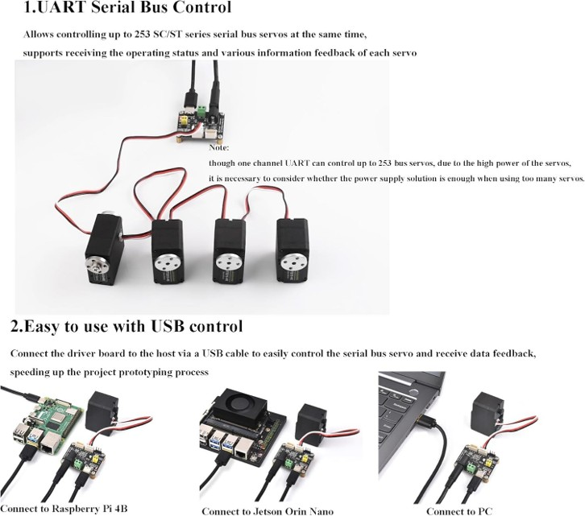
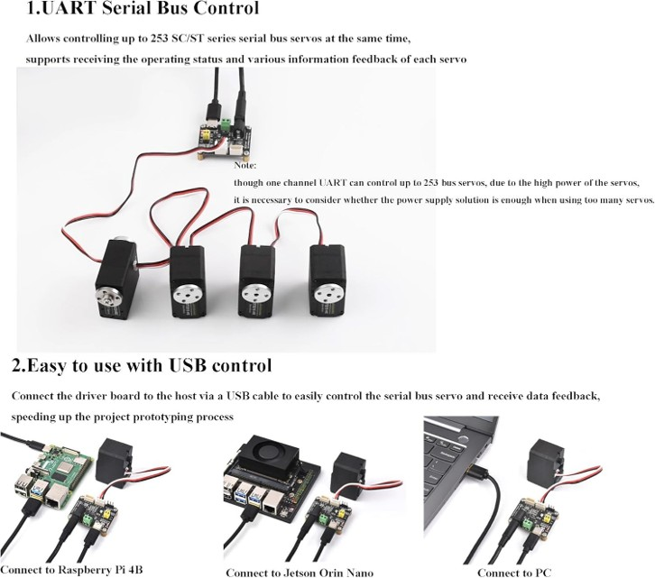

PID (Proportional-Integral-Derivative) control is a feedback control technique widely used in industrial and robotics applications. The PID controller calculates an error value as the difference between a desired setpoint and a measured process variable, then applies correction based on proportional, integral, and derivative terms:
u(t) = Kp * e(t) + Ki * ∫e(t)dt + Kd * de(t)/dt
The Feetech STS 3215 is a bus servo motor commonly used in robotics. To control it with PID, you need:
 

Download the Feetech FD.1.9.8.3 bus servo debug software to test and debug servo motors:
Download and review the sample Python script for motion control of the Feetech STS 3215 servo motor: servo_control.py
Alternatively, download and review the sample Python script using the st3215 library (GitHub): st3215_control.py
Change PID parameters using Feetech Servo Debug software. See the demo in the following.